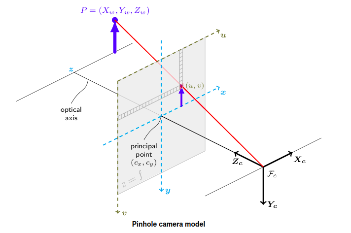

Blender Camera Class#
- class BlenderCamera(frame=None, intrinsic_matrix=None, resolution=None, pixel_size=None, clip_distance=None)[source]#
Bases:
objectRepresents a camera in 3D space with intrinsic parameters, orientation, and position.
The camera orientation is defined by the frame.
The frame of the camera defines the orientation of the camera in 3D space with (convention OPENCV):
origin: The position of the camera in 3D space.
x-axis: The right direction of the camera (left to right).
y-axis: The up direction of the camera (up to down).
z-axis: The optical axis of the camera (from the camera to the scene).

OpenCV camera frame convention (source: OpenCV)#
The intrinsic parameters of the camera are defined by the following parameters:
focal_length: The focal length of the camera in pixels along the x-axis and y-axis.
principal_point: The principal point of the camera in pixels.
They are represented by the intrinsic matrix of the camera:
\[\begin{split}K = \begin{bmatrix} f_x & 0 & c_x \\ 0 & f_y & c_y \\ 0 & 0 & 1 \end{bmatrix}\end{split}\]Other parameters of the camera can be stored in the camera object:
resolution: The resolution of the camera in numbers of pixels. A 2-element array representing the resolution of the camera in numbers of pixels along the x and y axes.
pixel_size: The pixel size of the camera in millimeters (distance unit). A 2-element array representing the pixel size of the camera in millimeters along the x and y axes.
clip_distance: The distances in millimeters to the near and far clipping planes. A 2-element array representing the distances of the near and far clipping planes of the camera in millimeters. Only points between the near and far clipping planes are visible in the camera view.
- Parameters:
frame (Frame, optional) – The frame of the camera. (see py3dframe : https://https://artezaru.github.io/py3dframe/), default Frame().
intrinsic_matrix (Optional[numpy.ndarray], optional) – The intrinsic matrix of the camera. (3x3 matrix), by default None. The intrinsic matrix is a 3x3 matrix representing the intrinsic parameters of the camera.
resolution (Optional[Union[Sequence[Integral], numpy.ndarray]], optional) – The resolution of the camera in numbers of pixels, by default None. The two values are used for x and y axes respectively.
pixel_size (Optional[Union[Sequence[Number], numpy.ndarray]], optional) – The pixel size of the camera in the millimeters of the camera, by default None. The two values are used for x and y axes respectively. The pixel size is the size of a single pixel in the millimeters of the camera.
clip_distance (Optional[Union[NSequence[Number], numpy.ndarray]], optional) – The distance of the near and far clipping planes of the camera, by default None. The two values are used for near and far clipping planes respectively.
- property OpenCV_rvec: ndarray#
Get or set the rotation vector of the camera in the OpenCV format.
The axis of the camera frame for OpenCV are the same as the BlenderCamera frame. Furthermore, the convention for OpenCV is \(X_{cam} = R X_{world} + T\), convention=4 for py3dframe.
- Returns:
The rotation vector of the camera with shape (3,).
- Return type:
- property OpenCV_tvec: ndarray#
Get or set the translation vector of the camera in the OpenCV format.
The axis of the camera frame for OpenCV are the same as the BlenderCamera frame. Furthermore, the convention for OpenCV is \(X_{cam} = R X_{world} + T\), convention=4 for py3dframe.
- Returns:
The translation vector of the camera with shape (3,).
- Return type:
- property aspect_ratio: float | None#
Get the aspect ratio of the camera.
The aspect ratio is a float representing the aspect ratio of the camera.
The aspect ratio is calculated as the ratio of the pixel aspect in y direction to the pixel aspect in x direction.
- Returns:
The aspect ratio of the camera. (or None if fx or fy is not set)
- Return type:
Optional[float]
- property clip_distance: Tuple[float | None, float | None]#
Get or set the near and far clipping planes of the camera in millimeters.
The near and far clipping planes are a tuple of two floats representing the near and far clipping planes of the camera in millimeters. Only points between the near and far clipping planes are visible in the camera view.
- property clip_distance_far: float | None#
Get or set the far clipping plane of the camera in millimeters.
The far clipping plane is a float representing the far clipping plane of the camera in millimeters. Only points between the near and far clipping planes are visible in the camera view.
Note
An alias for clip_distance_far is
clfar.See also
clip_distance_near()orclnearto set the near clipping plane in millimeters.
- Returns:
The far clipping plane of the camera in millimeters. (or None if not set)
- Return type:
Optional[float]
- property clip_distance_near: float | None#
Get or set the near clipping plane of the camera in millimeters.
The near clipping plane is a float representing the near clipping plane of the camera in millimeters. Only points between the near and far clipping planes are visible in the camera view.
Note
An alias for clip_distance_near is
clnear.See also
clip_distance_far()orclfarto set the far clipping plane in millimeters.
- Returns:
The near clipping plane of the camera in millimeters. (or None if not set)
- Return type:
Optional[float]
- property focal_length: Tuple[float | None, float | None]#
Get or set the focal length of the camera in pixels.
The focal length is a tuple of two floats representing the focal length of the camera in pixels in x and y directions.
- property focal_length_x: float | None#
Get or set the focal length of the camera in pixels in x direction.
The focal length is a float representing the focal length of the camera in pixels in x direction.
This parameter is the component K[0, 0] of the intrinsic matrix K of the camera.
Note
An alias for focal_length_x is
fx.See also
focal_length_y()orfyto set the focal length in pixels in y direction.
- Returns:
The focal length of the camera in pixels in x direction. (or None if not set)
- Return type:
Optional[float]
- property focal_length_y: float | None#
Get or set the focal length of the camera in pixels in y direction.
The focal length is a float representing the focal length of the camera in pixels in y direction.
This parameter is the component K[1, 1] of the intrinsic matrix K of the camera.
Note
An alias for focal_length_y is
fy.See also
focal_length_x()orfxto set the focal length in pixels in x direction.
- Returns:
The focal length of the camera in pixels in y direction. (or None if not set)
- Return type:
Optional[float]
- property frame: Frame#
Get or set the frame of the camera.
The frame of the camera defines the orientation of the camera in 3D space. The camera observes the scene along the z-axis of the frame.
The frame of the camera defines the orientation of the camera in 3D space with (convention OPENCV):
origin: The position of the camera in 3D space.
x-axis: The right direction of the camera (left to right).
y-axis: The up direction of the camera (up to down).
z-axis: The optical axis of the camera (from the camera to the scene).
OpenCV camera frame convention (source: OpenCV)#
See also
https://artezaru.github.io/py3dframe/ for more information about the frame.
- Returns:
The frame of the camera.
- Return type:
Frame
- classmethod from_camera(camera, resolution, clip_distance)[source]#
Create a BlenderCamera object from a Camera object.
Warning
This can be use only if the
Camera.intrinsic()ispycvcam.Cv2Intrinsicand theCamera.extrinsic()ispycvcam.Cv2Extrinsic.- Parameters:
camera (Camera) – The Camera object to create the BlenderCamera from.
resolution (Union[Sequence[Integral], numpy.ndarray]) – The resolution of the camera in numbers of pixels, by default None. The two values are used for x and y axes respectively.
clip_distance (Union[Sequence[Number], numpy.ndarray]) – The distance of the near and far clipping planes of the camera, by default None. The two values are used for near and far clipping planes respectively.
- Returns:
The created BlenderCamera object.
- Return type:
- classmethod from_dict(data)[source]#
Create a BlenderCamera instance from a dictionary.
The structure of the dictionary should be as provided by the
to_dict()method.If focal_length, resolution, pixel_size, or principal_point are not provided, the default values are used.
The other keys are ignored.
- Parameters:
data (dict) – A dictionary containing the camera’s data.
- Returns:
The BlenderCamera instance.
- Return type:
- Raises:
ValueError – If the data is not a dictionary.
- classmethod from_json(filename)[source]#
Create a BlenderCamera instance from a JSON file.
The structure of the JSON file follows the
to_dict()method.- Parameters:
filename (str) – The path to the JSON file.
- Returns:
A BlenderCamera instance.
- Return type:
- Raises:
FileNotFoundError – If the filename is not a valid path.
- get_OpenCV_RT()[source]#
Get the rotation and translation of the camera in the OpenCV format.
The axis of the camera frame for OpenCV are the same as the BlenderCamera frame. Furthermore, the convention for OpenCV is \(X_{cam} = R X_{world} + T\), convention=4 for py3dframe.
- get_OpenGL_RT()[source]#
Get the rotation and translation of the camera in the OpenGL format.
The axis of the camera frame for OpenGL are different from the BlenderCamera frame: - x-axis: The same as the BlenderCamera frame : right direction of the camera (left to right). - y-axis: The opposite of the BlenderCamera frame : up direction of the camera (down to up). - z-axis: The opposite of the BlenderCamera frame : (from the scene to the camera).
Furthermore, the convention for OpenGL is \(X_{world} = R X_{cam} + T\), convention=0 for py3dframe.
- property intrinsic_matrix: ndarray | None#
Get or set the intrinsic matrix of the camera.
The intrinsic matrix is a 3x3 matrix representing the intrinsic parameters of the camera.
\[\begin{split}K = \begin{bmatrix} f_x & 0 & c_x \\ 0 & f_y & c_y \\ 0 & 0 & 1 \end{bmatrix}\end{split}\]- Returns:
The intrinsic matrix of the camera. (or None if not set)
- Return type:
Optional[numpy.ndarray]
- is_complete()[source]#
Check if the camera is complete.
A camera is complete if all intrinsic parameters are set.
- Returns:
True if the camera is complete, False otherwise.
- Return type:
- property lens: float | None#
Get the lens of the camera in millimeters.
The lens is a float representing the focal length of the camera in millimeters.
The lens is calculated as follows:
\[f = \frac{f_x \cdot s}{vf}\]where \(f_x\) is the focal length in pixels in x direction, \(s\) is the sensor size in millimeters and \(vf\) is the view factor of the camera.
Warning
This lens is only for Blender. No reel physical meaning.
- Returns:
The lens of the camera in millimeters. (or None if fx, fy, px, py, rx or ry is not set)
- Return type:
Optional[float]
- property pixel_aspect_x: float | None#
Get the pixel aspect of the camera in x direction.
The pixel aspect is a float representing the pixel aspect of the camera in x direction.
If \(f_x < f_y\), the pixel aspect is calculated as \(\frac{f_y}{f_x}\). If \(f_x \geq f_y\), the aspect ratio is 1.
- Returns:
The pixel aspect of the camera in x direction. (or None if fx or fy is not set)
- Return type:
Optional[float]
- property pixel_aspect_y: float | None#
Get the pixel aspect of the camera in y direction.
The pixel aspect is a float representing the pixel aspect of the camera in y direction.
If \(f_y < f_x\), the pixel aspect is calculated as \(\frac{f_x}{f_y}\). If \(f_y \geq f_x\), the aspect ratio is 1.
- Returns:
The pixel aspect of the camera in y direction. (or None if fx or fy is not set)
- Return type:
Optional[float]
- property pixel_size: Tuple[float | None, float | None]#
Get or set the pixel size of the camera in millimeters.
The pixel size is a tuple of two floats representing the pixel size of the camera in millimeters in x and y directions.
- property pixel_size_x: float | None#
Get or set the pixel size of the camera in millimeters in x direction.
The pixel size is a float representing the pixel size of the camera in millimeters in x direction.
Note
An alias for pixel_size_x is
px.See also
pixel_size_y()orpyto set the pixel size in millimeters in y direction.
- Returns:
The pixel size of the camera in millimeters in x direction. (or None if not set)
- Return type:
Optional[float]
- property pixel_size_y: float | None#
Get or set the pixel size of the camera in millimeters in y direction.
The pixel size is a float representing the pixel size of the camera in millimeters in y direction.
Note
An alias for pixel_size_y is
py.See also
pixel_size_x()orpxto set the pixel size in millimeters in x direction.
- Returns:
The pixel size of the camera in millimeters in y direction. (or None if not set)
- Return type:
Optional[float]
- property principal_point: Tuple[float | None, float | None]#
Get or set the principal point of the camera in pixels.
The principal point is a tuple of two floats representing the principal point of the camera in pixels in x and y directions.
- property principal_point_x: float | None#
Get or set the principal point of the camera in pixels in x direction.
The principal point is a float representing the principal point of the camera in pixels in x direction.
This parameter is the component K[0, 2] of the intrinsic matrix K of the camera.
Note
An alias for principal_point_x is
cx.See also
principal_point_y()orcyto set the principal point in pixels in y direction.
- Returns:
The principal point of the camera in pixels in x direction. (or None if not set)
- Return type:
Optional[float]
- property principal_point_y: float | None#
Get or set the principal point of the camera in pixels in y direction.
The principal point is a float representing the principal point of the camera in pixels in y direction.
This parameter is the component K[1, 2] of the intrinsic matrix K of the camera.
Note
An alias for principal_point_y is
cy.See also
principal_point_x()orcxto set the principal point in pixels in x direction.
- Returns:
The principal point of the camera in pixels in y direction. (or None if not set)
- Return type:
Optional[float]
- property resolution: Tuple[float | None, float | None]#
Get or set the resolution of the camera in number of pixels.
The resolution is a tuple of two floats representing the resolution of the camera in number of pixels in x and y directions.
- property resolution_x: float | None#
Get or set the resolution of the camera in number of pixels in x direction.
The resolution is a float representing the resolution of the camera in number of pixels in x direction.
Note
An alias for resolution_x is
rx.See also
resolution_y()orryto set the resolution in number of pixels in y direction.
- Returns:
The resolution of the camera in number of pixels in x direction. (or None if not set)
- Return type:
Optional[float]
- property resolution_y: float | None#
Get or set the resolution of the camera in number of pixels in y direction.
The resolution is a float representing the resolution of the camera in number of pixels in y direction.
Note
An alias for resolution_y is
ry.See also
resolution_x()orrxto set the resolution in number of pixels in x direction.
- Returns:
The resolution of the camera in number of pixels in y direction. (or None if not set)
- Return type:
Optional[float]
- property sensor_fit: str | None#
Get the sensor fit of the camera (“HORIZONTAL” or “VERTICAL”).
The sensor fit is a string representing the sensor fit of the camera.
If \(a_x \cdot r_x \geq a_y \cdot r_y\), the sensor fit is “HORIZONTAL”. If \(a_x \cdot r_x < a_y \cdot r_y\), the sensor fit is “VERTICAL”.
where \(a_x\) and \(a_y\) are the pixel aspect in x and y direction respectively and \(r_x\) and \(r_y\) are the resolution in number of pixels in x and y direction respectively.
- Returns:
The sensor fit of the camera. (or None if fx, fy or rx, ry is not set)
- Return type:
- property sensor_size: float | None#
Get the sensor size of the camera in millimeters.
If the sensor fit is “HORIZONTAL”, the sensor size is directly the sensor size in x direction. If the sensor fit is “VERTICAL”, the sensor size is directly the sensor size in y direction.
Warning
This sensor size is only for Blender. No reel physical meaning.
- Returns:
The sensor size of the camera in millimeters. (or None if fx, fy, px, py, rx or ry is not set)
- Return type:
Optional[float]
- property sensor_size_x: float | None#
Get the sensor size of the camera in millimeters in x direction.
The sensor size is a float representing the sensor size of the camera in millimeters in x direction.
The sensor size is calculated as the product of the pixel size and the resolution of the camera.
Note
An alias for sensor_size_x is
sensor_width.- Returns:
The sensor size of the camera in millimeters in x direction. (or None if px or rx is not set)
- Return type:
Optional[float]
- property sensor_size_y: float | None#
Get the sensor size of the camera in millimeters in y direction.
The sensor size is a float representing the sensor size of the camera in millimeters in y direction.
The sensor size is calculated as the product of the pixel size and the resolution of the camera.
Note
An alias for sensor_size_y is
sensor_height.- Returns:
The sensor size of the camera in millimeters in y direction. (or None if py or ry is not set)
- Return type:
Optional[float]
- set_OpenCV_RT(rotation, translation)[source]#
Set the rotation and translation of the camera in the OpenCV format.
The axis of the camera frame for OpenCV are the same as the BlenderCamera frame. Furthermore, the convention for OpenCV is \(X_{cam} = R X_{world} + T\), convention=4 for py3dframe.
- Parameters:
rotation (Rotation) – The rotation of the camera.
translation (numpy.ndarray) – The translation of the camera with shape (3, 1).
- Return type:
None
- set_OpenGL_RT(rotation, translation)[source]#
Set the rotation and translation of the camera in the OpenGL format.
The axis of the camera frame for OpenGL are different from the BlenderCamera frame: - x-axis: The same as the BlenderCamera frame : right direction of the camera (left to right). - y-axis: The opposite of the BlenderCamera frame : up direction of the camera (down to up). - z-axis: The opposite of the BlenderCamera frame : (from the scene to the camera).
Furthermore, the convention for OpenGL is \(X_{world} = R X_{cam} + T\), convention=0 for py3dframe.
- Parameters:
rotation (Rotation) – The rotation of the camera.
translation (numpy.ndarray) – The translation of the camera with shape (3, 1).
- Return type:
None
- property shift_x: float | None#
Get the shift x of the camera in pixels.
The shift x is a float representing the shift x of the camera in pixels.
The shift x is calculated as follows:
\[sx = - \frac{c_x - (r_x - 1) / 2}{vf}\]where \(c_x\) is the principal point in pixels in x direction, \(r_x\) is the resolution in number of pixels in x direction and \(vf\) is the view factor of the camera.
Warning
This shift x is only for Blender. No reel physical meaning.
“-” added to fix the shift direction in Blender.
- Returns:
The shift x of the camera in pixels. (or None if fx, fy, px, py, rx or ry is not set)
- Return type:
Optional[float]
- property shift_y: float | None#
Get the shift y of the camera in pixels.
The shift y is a float representing the shift y of the camera in pixels.
The shift y is calculated as follows:
\[sy = \frac{(c_y - (r_y - 1) / 2) ar}{vf}\]where \(c_y\) is the principal point in pixels in y direction, \(r_y\) is the resolution in number of pixels in y direction, \(vf\) is the view factor of the camera and \(ar\) is the aspect ratio of the camera.
Warning
This shift y is only for Blender. No reel physical meaning.
- Returns:
The shift y of the camera in pixels. (or None if fx, fy, px, py, rx or ry is not set)
- Return type:
Optional[float]
- to_dict(description=None)[source]#
Export the BlenderCamera’s data to a dictionary.
The structure of the dictionary is as follows:
{ "type": "BlenderCamera", "description": "Description of the camera", "frame": { "translation": [float, float, float], "rotvec": [float, float, float], "convention": 0, "parent": None }, "fx": float, "fy": float, "cx": float, "cy": float, "rx": int, "ry": int, "px": float, "py": float, "clnear": float, "clfar": float } }
- Parameters:
description (Optional[str]) – A description of the camera, by default None. This message will be included in the dictionary under the key “description” if provided.
- Returns:
A dictionary containing the camera’s data.
- Return type:
- Raises:
ValueError – If the description is not a string.
- to_json(filename, description=None)[source]#
Export the BlenderCamera’s data to a JSON file.
The structure of the JSON file follows the
to_dict()method.- Parameters:
- Raises:
FileNotFoundError – If the filename is not a valid path.
- Return type:
None
- property view_factor: float | None#
Get the view factor of the camera.
The view factor is a float representing the view factor of the camera.
If the sensor fit is “HORIZONTAL”, the view factor is directly the resolution in number of pixels in x direction. If the sensor fit is “VERTICAL”, the view factor is calculated as the product of the aspect ratio and the resolution in number of pixels in y direction.
Warning
This view factor is only for Blender. No reel physical meaning.
- Returns:
The view factor of the camera. (or None if fx, fy or rx, ry is not set)
- Return type:
Optional[float]
{kind=link}